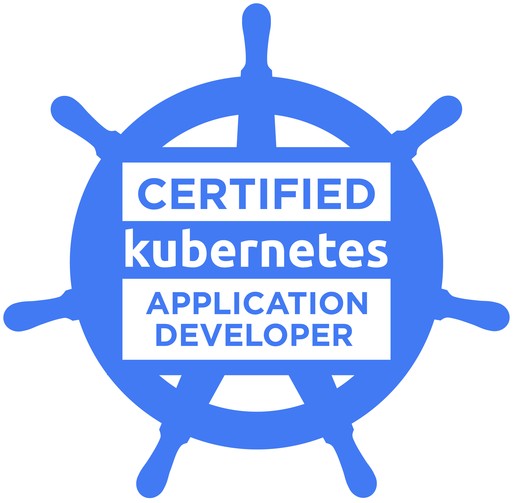

My name is Luca, I'm a software engineer based in Milan, and I'm currently working at TrueLayer.
My main area of expertise is backend development, specifically in designing, implementing and integrating APIs. I have experience working on cloud-based environments (mostly AWS) with distributed systems and microservices, mainly built upon Java and .NET stack.
I'm also interested in DevOps and related technologies and methodologies: I'm familiar with Kubernetes, I obtained CKAD certification in 2022 and AWS Certified Solution Architect Associate certification in 2023.
When I'm not at work, I like doing sports (football and running being my favourites), cooking and I'm really passionate about wine (I'm currently studying to become sommelier).
Education
2013-2015 | Master’s Degree in Computer Engineering (Politecnico di Milano)
2010-2013 | Bachelor's Degree in Computer Engineering (Politecnico di Milano)
2005-2010 | Liceo Scientifico L. Respighi, Piacenza
Working experiences
Nov 2020 - Present | TrueLayer - Senior Software Engineer
Since I joined TrueLayer, I've been part of teams taking care of implementation, extension and maintenance of services that integrate with banks' PSD2 open banking APIs across Europe. In 2024, I was part of the team taking care of designing and implementing a new company product based on BACS Direct Debit. In addition, I'm a contributor of the official Java and .NET libraries that clients can use to integrate with TrueLayer payments APIs.
Technologies:
- .NET core, Java
- Kubernetes, Helm, Vault, Terraform, CircleCI
- PostgreSQL, DynamoDB, Redis
- RabbitMQ, gRPC, REST, GraphQL
- Prometheus, Grafana, Kibana, Honeycomb
Nov 2019 - Nov 2020 | Fabrick - Senior Software Engineer
During my time at Fabrick I contributed as tech lead to two main projects: Smartika (peer-to-peer landing) platform replacement and IDCM solution (Mastercard Identity Check Mobile) integration for BNP Paribas mobile app. I matured experience with microservices best practices, domain-driven design, cloud-native applications implementation and Kubernetes.
Technologies:
- Java (Spring Boot)
- Kubernetes, Gitlab CI, Kong, Keycloak
- MongoDB
- Elasticsearch, Fluentd, Kibana
Jan 2017 - Nov 2019 | Vipera Plc - Software Engineer
I lead the design and implementation of a new company product aimed to support banks and merchants in the creation and management of rewarding programs for customers (i.e. couponing, cashback, loyalties). I then contributed to the migration of the online banking platform for one of the main UAE banks, where my main task was to analyse functional requirements from a technical perspective and coordinate technical activities with dev team; in addition, I contributed to the implementation of critical components.
Technologies:
- Java, Java OSGi
- Docker
- MySQL, MS SQL Server
Jan 2016 - Jan 2017 | Codd&Date - Software Engineer
In my first experience as a software engineer, I contributed to a few projects involving full stack web development and Android mobile native development.
Technologies:
- Java (Play! framework), Java OSGi, Android
- HTML5, Javascript, jQuery
- Docker
- MySQL
Other experiences
From 2017 to 2020, I worked in my free time on a drink and food project delivery in the Milan area. I implemented the Android native mobile app, which was published on Play store in 2018, and contributed to the implementation of some backend components and services. This experience allowed me to explore some technologies I was not familiar with at the time, like CircleCI and Fastlane for Android app build and deploy automation, or Sails framework used for backend.
Certifications
10/05/2023 | AWS Certified Solutions Architect – Associate

AWS Certified Solutions Architect - Associate showcases knowledge and skills in AWS technology, across a wide range of AWS services. The focus of this certification is on the design of cost and performance optimized solutions, demonstrating a strong understanding of the AWS Well-Architected Framework
03/05/2022 | CKAD: Certified Kubernetes Application Developer

The Certified Kubernetes Application Developer (CKAD) can design, build and deploy cloud-native applications for Kubernetes. A CKAD can define application resources and use Kubernetes core primitives to create/migrate, configure, expose and observe scalable applications.